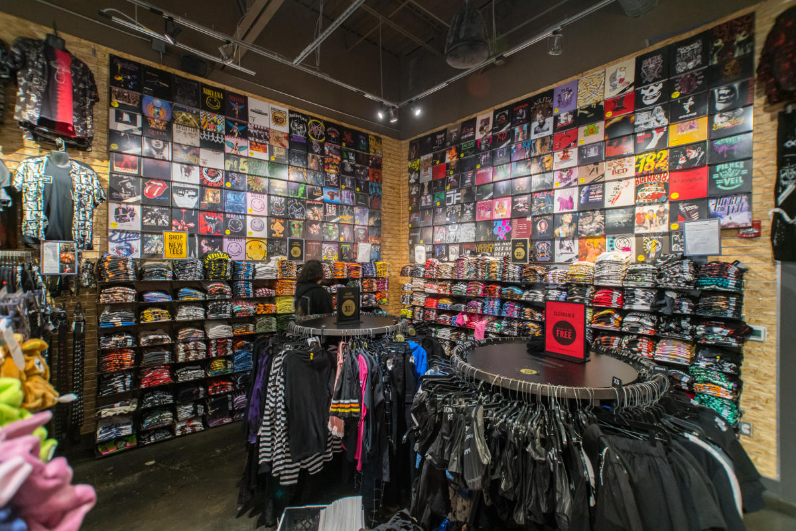

At the heart of early punk was calculated anger.
It was anger at the establishment and anger at the allegedly soft
rebellion of the hippie counterculture; anger, too, at the commodification
of rock and roll (Cullen 1996: 249). Its politics were avowedly apolitical,
yet it openly and explicitly confronted the traditions and norms of the
powers that be. Describing the cultural milieu for young people in 1975,
Greil Marcus notes the centrality of cultural production: ‘For the young
everything flowed from rock ‘n’ roll (fashion, slang, sexual styles, drug
habits, poses), or was organized by it, or was validated by it.’ But by
the early 1970s, with commodification in full swing, with some artists
said to have compromised their integrity by becoming rich stars, and
with ‘rock’ having been integrated into the mainstream,some people felt
that youth subcultures were increasingly a part of the intensifying
consumer society, rather than opponents of the mainstream. Punk promised
to build a scene that could not be taken. Its anger, pleasures, and ugliness
were to go beyond what capitalism and bourgeois society could swallow.
It would be untouchable, undesirable, unmanageable.
Early punk was a proclamation and an embrace of discord. In England it was
begun by working-class youths decrying a declining economy and rising
unemployment, chiding the hypocrisy of the rich, and refuting the notion of
reform. In America, early punk was a middle-class youth movement, a reaction
against the boredom of mainstream culture. Early punk sought to tear apart
consumer goods, royalty, and sociability; and it sought to destroy the idols
of the bourgeoisie.
At first punk succeeded beyond its own lurid dreams. The Sex Pistols created a
fresh moral panic fuelled by British tabloids, Members of Parliament, and plenty
of everyday folk. Initially, at least, they threatened ‘everything England stands
for’: patriotism, class hierarchy, ‘common decency’ and ‘good taste.’ When the
Sex Pistols topped the charts in Britain, and climbed high in America, Canada,
and elsewhere, punk savoured a moment in the sun: every public castigation only
convinced more people that punk was real.
“Damning God and the state, work and leisure, home and family, sex and play, the audience and itself, the music briefly made it possible to experience all those things as if they were not natural facts but ideological constructs: things than had been made and therefore could be altered, or done away with altogether. It became possible to see these things as bad jokes, and for the music to come forth as a better joke.”
Punk was to cross the rubicon of style from which there could be no retreat. Some punks went so far as to valorize anything mainstream society disliked, including rape and death camps; some punks slid into fascism. When the raw forces and ugliness of punk succumbed to corporate-capitalism within a few short years, the music/style nexus had lost its battle of Waterloo. Punk waged an all-out battle on this front, and it wielded new and shocking armaments, but in the end, even punk was proven profitable. Penny Rimbaud traces its cooptation:
“…within six months the movement had been bought out. The capitalist counter-revolutionaries had killed with cash. Punk degenerated from being a force for change, to becoming just another element in the grand media circus. Sold out, sanitised and strangled, punk had become just another social commodity, a burnt-out memory of how it might have been.”
